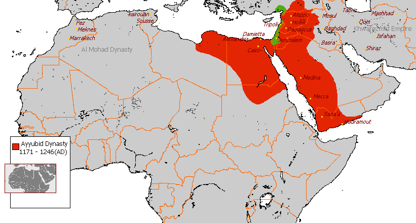
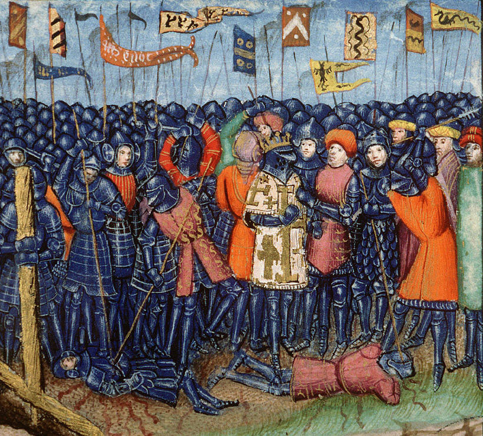
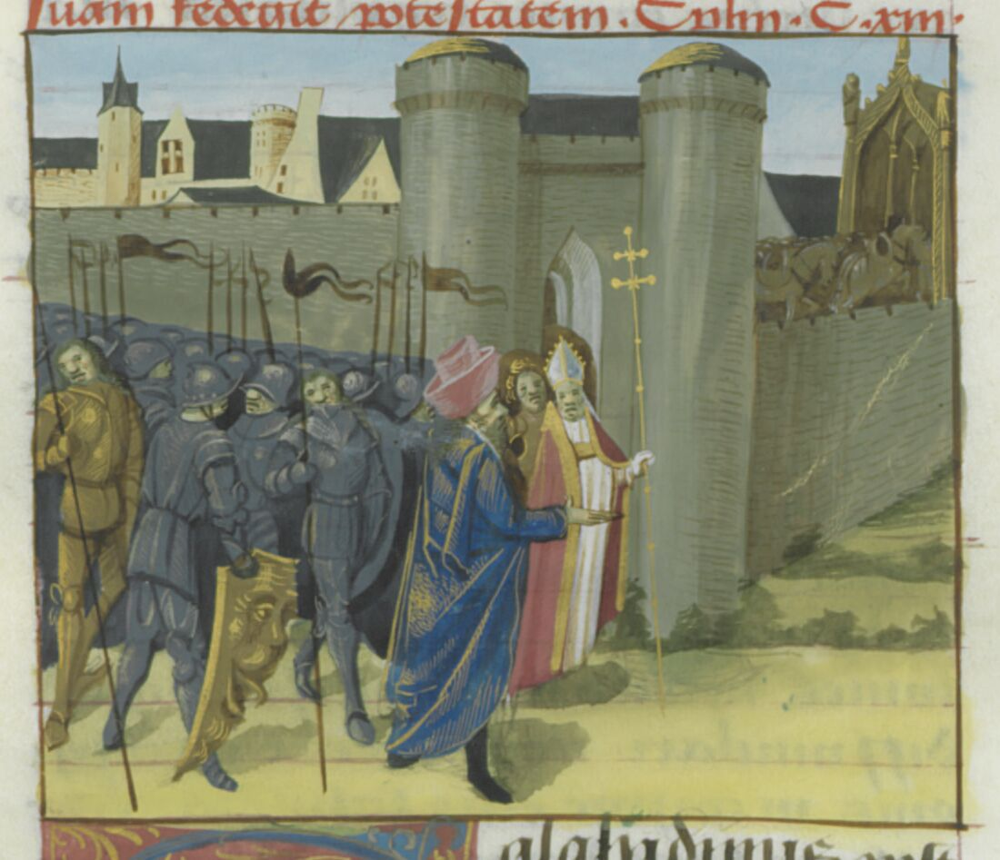
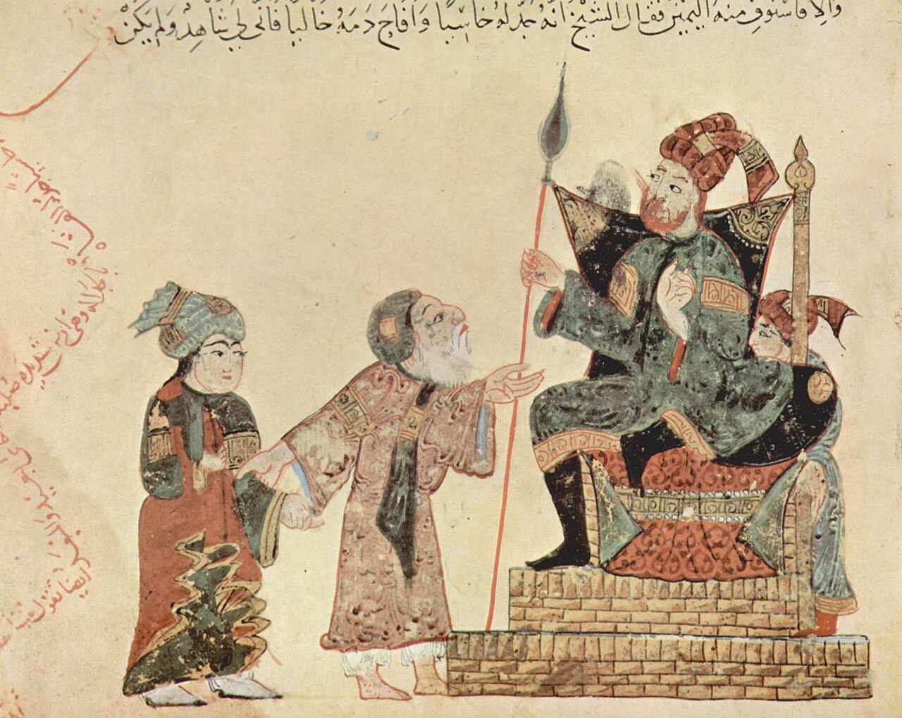

Biography Poster
Salah al-Din Yusuf ibn Ayyub · c. 1137 – 1193
Name and Background
Saladin, whose full name was Salah al-Din Yusuf ibn Ayyub, was born around 1137–1138 in Tikrit and died in 1193 in Damascus. He came from a Kurdish family and grew up at a time when Muslim rulers and the Crusader States were fighting for control of land in the Middle East.
Saladin first worked under the Muslim ruler Nur al-Din. He later went to Egypt with his uncle Shirkuh and became vizier in 1169. In 1171, he ended the Fatimid Caliphate and brought Egypt back under Sunni rule. After Nur al-Din died in 1174, Saladin took control of more land in Syria and Egypt. He eventually became the first ruler of the Ayyubid dynasty.
Achievements
Saladin became one of the most important Muslim rulers of the medieval period. One of his biggest achievements was bringing different Muslim territories together under his rule. This gave him a much stronger position against the Crusader States.
His most famous victory came at the Battle of Hattin on 4 July 1187. Saladin defeated the main army of the Kingdom of Jerusalem. This opened the way for him to take back many important towns and cities.
Later in 1187, Saladin captured Jerusalem after its defenders surrendered. Instead of destroying the city, he made an agreement that allowed many of its people to leave safely. This became an important part of the way Saladin was remembered.
Key Events
Impact
Saladin had a major effect on the medieval Middle East. By controlling Egypt and much of Syria, he created a stronger Muslim state that could challenge the Crusader States.
His victory at Hattin and capture of Jerusalem changed the course of the Crusades. Although the Third Crusade allowed the Crusaders to regain some coastal areas, they did not take Jerusalem back.
Saladin was also remembered long after his death. Muslim writers often praised him as a strong and fair ruler, while some Christian writers also described him with respect. Because different groups viewed him in different ways, his reputation has changed over time.
Sources
A primary source used to learn about Saladin is The Rare and Excellent History of Saladin by Bahāʾ al-Dīn Ibn Shaddād. Ibn Shaddād knew Saladin and was close to his court, so he could write about things he had seen or learned from people around Saladin. However, he admired Saladin, which could have affected the way he described him.
A secondary source is The Life and Legend of the Sultan Saladin by historian Jonathan Phillips, published in 2019. Phillips studied many different sources from the period and compared Arabic and Christian accounts. This helps historians see where different accounts agree or disagree.
Visuals



